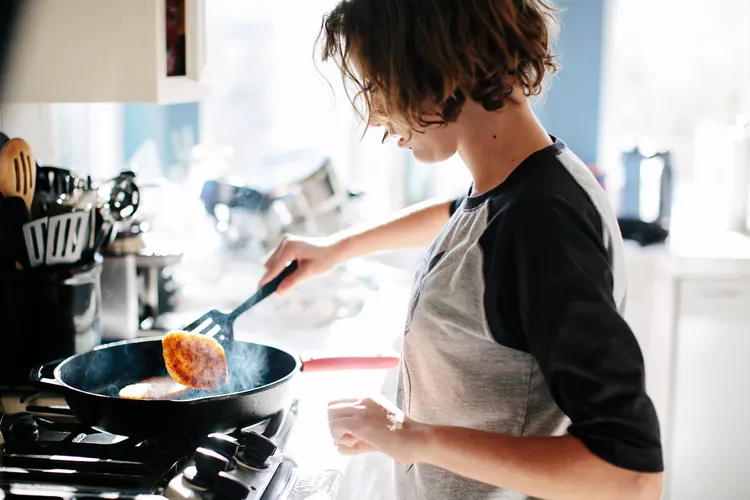
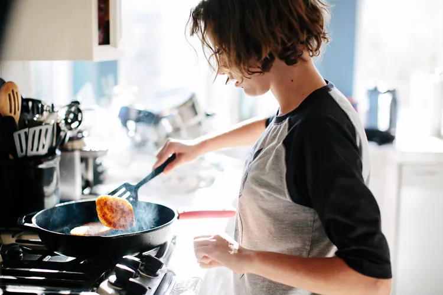

Curso de culinária básica
Bem-vindo ao emocionante mundo da culinária! Este Curso de Culinária Básica é o ponto de partida perfeito para quem deseja explorar os segredos da cozinha e aprender a criar pratos deliciosos a partir do zero. Se você é um iniciante na arte da culinária ou simplesmente deseja aprimorar suas habilidades culinárias, você veio ao lugar certo.
A culinária é uma forma de arte que combina sabores, texturas e técnicas para criar experiências gastronômicas memoráveis. É uma habilidade essencial que não apenas alimenta o corpo, mas também nutre a alma e une as pessoas em torno de uma mesa. Neste curso, você embarcará em uma jornada emocionante, onde descobrirá os fundamentos da culinária, desde técnicas de corte e preparação até a combinação de ingredientes para criar pratos saborosos.
Nossos instrutores altamente qualificados e experientes estão aqui para orientá-lo a cada passo do caminho. Eles compartilharão suas paixões culinárias e segredos de cozinha, garantindo que você adquira as habilidades e a confiança necessárias para criar refeições incríveis.
Prepare-se para aprender a arte de cortar, picar, refogar, assar e, o mais importante, desenvolver seu paladar para entender os sabores e equilíbrios dos ingredientes. Ao longo deste curso, você terá a oportunidade de experimentar receitas práticas e emocionantes que abrangem uma variedade de cozinhas e estilos culinários.
Lembre-se, a culinária é uma jornada de aprendizado contínuo, e este curso é apenas o começo. À medida que você desenvolve suas habilidades, sua criatividade culinária florescerá, permitindo que você crie pratos personalizados e surpreendentes que impressionarão a si mesmo e aos outros.
Então, coloque seu avental, afie suas facas e prepare-se para embarcar nesta emocionante aventura gastronômica. Estamos ansiosos para compartilhar essa jornada culinária com você e ajudá-lo a descobrir o prazer de criar pratos deliciosos que serão apreciados por amigos e familiares. Vamos começar!
 
